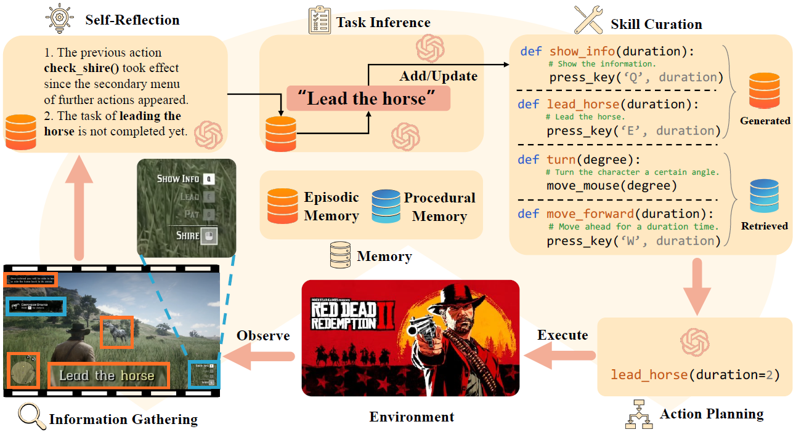

Recent studies have demonstrated the success of foundation agent in specific tasks or scenarios. However, existing agents cannot generalize across different scenarios, mainly due to their diverse observation and action spaces and semantic gaps, or reliance on task-specific resources.
In this work, we propose the General Computer Control (GCC) setting: building foundation agents that can master any computer task by taking only screen images (and possibly audio) of the computer as input, and producing keyboard and mouse operations as output, similar to human- computer interaction.
To target GCC, we propose Cradle, an agent framework with strong reasoning abilities, including self-reflection, task inference, and skill curation, to ensure generalizability and self-improvement across various tasks. To demonstrate the capabilities of Cradle, we deploy it in the complex AAA game Red Dead Redemption II, serving as a preliminary attempt towards GCC with a challenging target. To our best knowledge, our work is the first to enable LMM-based agents to follow the main storyline and finish real missions in complex AAA games, with minimal reliance on prior knowledge and application-specific resources.
Computers are the most important and universal interface in an increasingly digital world. Computer tasks cover a wide variety of scenarios, including complex software to create digital artifacts, everyday productivity software, apps, websites, video games. By providing standardized universal observation (i.e., screen and audio) and abstract actions (i.e., keyboard and mouse operations), computers are an ideal testbed to develop foundation agents. Therefore, we propose the General Computer Control (GCC) setting:
Building foundation agents that can master ANY computer task, e.g., software, games, etc., through only standard observation (i.e., screen and audio) and input device operations (i.e., keyboard and mouse).
This is a non-trivial setting, which presents significant challenges, including: i) observations being multimodal, which requires the alignment of the data in different modalities for better understanding and decision-making; ii) the necessity of accurate control of device operations (e.g., keyboard and mouse) to interact with the different target software affordances; iii) partial observability leads to the need for long-term memory to store past knowledge and be able to process and reuse it to solve novel tasks; and iv) efficient exploration of the environments in a structured manner to discover better strategies and solutions autonomously, i.e., self-improving, so the agent is able to generalize across the myriad tasks in the digital world.
Red Dead Redemption II (RDR2) is an epic AAA Western-themed action-adventure game by Rockstar Games. As one of the most famous and highest-selling games in the world, it is widely acknowledged for its movie-like realistic scenes, rich storylines, and immersive open-ended world.
As the main storyline progresses, different skills are gradually unlocked. As a close-source commercial game, no APIs are available for obtaining additional game-internal information nor pre-defined automation actions. We select RDR2 for our case study due to its complex blackbox control system, which epitomizes the most demanding computer tasks.
This enables us to evaluate the performance boundaries of our framework in such virtual environments. RDR2 requires both the capture and interpretation of various information types, and a broader range of keyboard and mouse interactions than typical software (such as using the mouse for navigation and using mouse buttons and keyboard keys together to realize actions in the game world).
To pursue GCC, we propose Cradle, a novel framework which can properly handle the challenges GCC presents, i.e., observing and interacting with any environment and dealing with any information and semantic gaps, without relying on any special API that is not available to a typical computer user.
Cradle is composed of six main modules: 1) information gathering to process multimodal input, 2) self-reflection to rethink past experiences, 3) task inference for choosing the best next task, 4) skill curation for generating and updating relevant skills for a given task, 5) action planning for deciding on specific actions for keyboard and mouse control, and 6) memory for storage and retrieval of past experiences and known skills.

To demonstrate the capabilities of generalization and adaptaion of Cradle, we deploy it in the complex AAA game Red Dead Redemption II, serving as a preliminary attempt towards GCC with a challenging target.
In this work, we introduce GCC, a general and challenging setting with a unified and standard interface for control of diverse software (e.g., via screenshots, and keyboard and mouse operations), paving the way towards general foundation agents across all digital world tasks.
To properly address the challenges this setting presents, we propose a novel framework, Cradle. We further showcase its effectiveness in a complex AAA digital game, Red Dead Redemption II, where it demonstrates to have strong performance in learning new skills, following the game storyline, and accomplishing real missions in the game. To the best of our knowledge, this is the first LMM-based agent that has managed to complete concrete missions from scratch in AAA games.
Although our agent can still face difficulties in specific tasks, Cradle serves as a pioneering work to develop more powerful LMM-based general agents across computer control tasks, combining both further framework enhancements and new advances in LMMs.
Future work in Cradle aims to extend it to support a broader spectrum of games, such as simulation and strategy games, as well as various software applications, to demonstrate its flexibility and adaptability across diverse environments. Moreover, incorporating audio as input is also key in important scenarios, which will introduce the additional challenge of dealing with simultaneous multiple modalities.
Once seamlessly interacting with any software, it enables an interactive benchmark to evaluate the multifaceted capabilities of foundation agents. Furthermore, the interactive data collected through framework development and execution will be instrumental in future efforts, from training better models to enhancing world modeling, thereby enhancing agent capabilities and usefulness for a wide range of users.
@article{weihao2024cradle,
title = {{Cradle: Empowering Foundation Agents towards General Computer Control}},
author = {Weihao Tan and Wentao Zhang and Xinrun Xu and Haochong Xia and Ziluo Ding and Boyu Li and Bohan Zhou and Junpeng Yue and Jiechuan Jiang and Yewen Li and Ruyi An and Molei Qin and Chuqiao Zong and Longtao Zheng and Yujie Wu and Xiaoqiang Chai and Yifei Bi and Tianbao Xie and Pengjie Gu and Xiyun Li and Ceyao Zhang and Long Tian and Chaojie Wang and Xinrun Wang and Börje F. Karlsson and Bo An and Shuicheng Yan and Zongqing Lu},
journal = {arXiv preprint arXiv:2403.03186},
year = {2024},
}